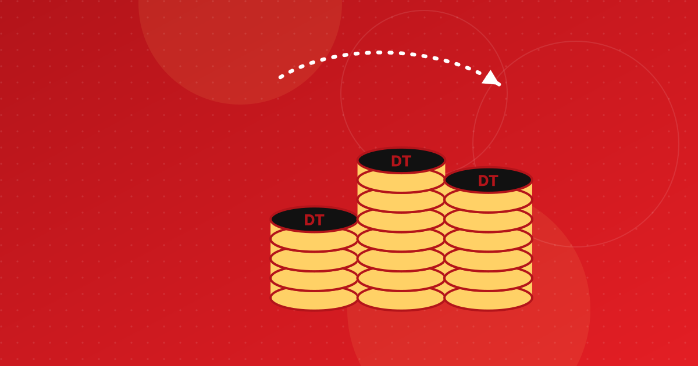

سعر صرف اليورو مقابل الدينار التونسي: كيف يعمل وكيف تحصل على أفضله
كيف يتحدّد سعر اليورو مقابل الدينار في سوق الصرف بين البنوك، ولماذا تختلف أسعار البنوك ومكاتب الصرف وخدمات التحويل، وما الذي حرّكه في 2025-2026، وكيف تحصل على دنانير أكثر مقابل يوروهاتك.

أبرز النقاط
- يتحدّد سعر الدينار في سوق الصرف بين البنوك، حيث يؤدّي البنك المركزي التونسي دور صانع السوق الرئيسي ويتدخّل فيها، والدينار غير قابل للتحويل بحرية.
- السعر الذي ينشره البنك المركزي يوميًا هو متوسط السعر بين البنوك لليوم السابق، وهو مرجع تضيف إليه البنوك ومكاتب الصرف وخدمات التحويل هوامشها.
- خلال 2025 خسر الدينار 1,6% مقابل اليورو لكنه ربح 9,8% مقابل الدولار، ويعود ذلك أساسًا إلى قوة اليورو في الأسواق العالمية.
- لا يُشترى الدينار في الخارج ولا يُصدَّر، ويجب التصريح بالعملة الأجنبية البالغة 20 000 دينار أو أكثر، ويلزم وصل الصرف لإعادة تحويل الدنانير المتبقية.
لا يتوقف عدد الدنانير التي تحصل عليها مقابل يورو واحد على الحظ بقدر ما يتوقف على المكان الذي تصرف فيه. إذ يتحدّد سعر صرف اليورو مقابل الدينار التونسي في سوق صرف بين البنوك تخضع للتوجيه، ثم يضيف كل بنك ومكتب صرف وخدمة تحويل هامشه الخاص. يشرح هذا الدليل كيف يعمل سعر الصرف، وما الذي حرّكه في 2025 و2026، والقواعد المطبّقة على المسافرين والتونسيين المقيمين بالخارج، وكيف تحصل على أفضل سعر. ولمعرفة سعر اليوم، اطّلع على سعر اليورو بالدينار مباشرة.
كيف يتحدّد سعر صرف الدينار التونسي؟
الدينار ليس مربوطًا بعملة أخرى ولا معوّمًا تعويمًا حرًّا. فسعره يتحدّد في سوق الصرف بين البنوك، التي أُحدثت في مارس 1994، حيث تتبادل البنوك التونسية العملات في ما بينها. ويُعدّ البنك المركزي التونسي صانع السوق الرئيسي، وهو بحسب تعبيره «يتدخّل لتعديل سيولة السوق»، وفق ورقة نشرها المرصد التونسي للاقتصاد سنة 2023.
وقد خُفّفت القيود على هذا النظام على مراحل. فقد أعلن البنك المركزي سياسة صرف أكثر مرونة سنة 2012، في وقت كانت فيه برامج صندوق النقد الدولي المتتالية تدفع نحو مزيد من المرونة، ومنذ منشور صدر سنة 2016 أصبح يعتمد البتّات بالعملة الأجنبية لإضفاء مزيد من الشفافية على تدخّلاته، كما أوردت Leaders آنذاك. فالبنك المركزي ما يزال يوجّه السعر، وليس الأمر تعويمًا حرًّا على غرار اليورو.
لماذا لا يُعدّ الدينار قابلًا للتحويل بحرية؟
أعلنت تونس قابلية تحويل الدينار بالنسبة إلى المعاملات الجارية سنة 1992، غير أن العمليات الرأسمالية ما تزال خاضعة لمجلة الصرف لسنة 1976 التي تشترط ترخيصًا مسبقًا لكثير من المعاملات. وعمليًا، يترتّب على ذلك أمران لمن يحمل اليورو:
- لا يمكن شراء الدينار خارج تونس، كما تذكّر نصائح السفر الصادرة عن وزارة الخارجية البلجيكية.
- تصدير الأوراق النقدية بالدينار ممنوع، وفق المصدر نفسه الذي حُدّث في أكتوبر 2026.
ويُناقَش إصلاح المجلة منذ سنوات. وقد دخل جزء منه حيّز التنفيذ: فمنذ 1 جانفي 2026، يمكن للمقيمين فتح حسابات بالعملة الأجنبية دون ترخيص مسبق من البنك المركزي. ويتابع مقالنا حول إصلاح مجلة الصرف بقية الملف.
ما السعر الذي ينشره البنك المركزي التونسي؟
ينشر البنك المركزي يوميًا على موقعه متوسط أسعار الصرف بين البنوك لليوم السابق، على سبيل الإعلام. وفي توضيح أصدره سنة 2022 ونقلته Kapitalis، شدّد البنك على أن هذا السعر، «وإن نُشر على موقع البنك المركزي، ليس سعر البنك المركزي»، بل هو متوسط المعاملات المنجزة بين البنوك، ويُحيَّن بفارق يوم واحد.
وهذا هو الرقم الذي يُسمّى عادة «السعر الرسمي»، وهو المرجع الذي تعتمده الصحافة وصفحة الأسعار لدينا. لكنه سعر جملة، ولا يمكن لأي فرد أن يصرف به.
عرض البيانات
| البيان | القيمة |
|---|---|
| 31 ديسمبر 2024 | 3,32 دينار |
| 1 أكتوبر 2025 | 3,42 دينار |
| 31 ديسمبر 2025 | 3,37 دينار |
| 29 جوان 2026 | 3,37 دينار |
| 29 سبتمبر 2026 | 3,37 دينار |
| 5 أكتوبر 2026 | 3,37 دينار |
لماذا يختلف السعر الرسمي عن سعر البنك ومكتب الصرف وخدمة التحويل؟
يشتري كل وسيط يوروهاتك بأقل من متوسط السعر بين البنوك ويبيعها بأعلى منه، والفارق هو ما يجنيه.
- البنوك تعلن سعر شراء وسعر بيع لكل عملة، والفرق بينهما هو الهامش.
- مكاتب الصرف، المرخّص لها من البنك المركزي منذ 2019، لا يحقّ لها سوى شراء العملات القابلة للتحويل وبيعها مقابل الدينار. ويُلزمها منشور البنك المركزي عدد 2018-07 بإشهار الأسعار التي تطبّقها وبتسليم وصل صرف عن كل عملية شراء.
- خدمات تحويل الأموال تحدّد سعرها الخاص لليورو مقابل الدينار وكثيرًا ما تضيف رسومًا. وفي مسح البنك الدولي لشهر أوت 2025 حول التحويلات من فرنسا، تراوح هامش الصرف بين -0,46% و7,31%، كما يفصّل دليلنا حول أرخص طريقة لتحويل المال إلى تونس.
لذلك فإن العرض «دون رسوم» ليس مجانيًا إذا كان السعر سيئًا. والمقارنة المنصفة الوحيدة هي المبلغ الإجمالي بالدينار الذي يصل مقابل المبلغ نفسه باليورو.
ما الذي حرّك سعر اليورو مقابل الدينار في 2025 و2026؟
كان اليورو نفسه المحرّك الأول. ففي 2025، دفعت قوة اليورو في الأسواق العالمية سعره مقابل الدينار إلى الارتفاع، في حين تحسّن الدينار مقابل دولار أضعف. ويُرجع البنك المركزي نفسه التقلبات اليومية إلى «تغيّر اليورو والدولار في السوق الدولية».
- 2025: كان اليورو يساوي 3,3209 دينار في 31 ديسمبر 2024 (البنك المركزي التونسي). وفي 17 سبتمبر 2025 بلغ 3,414 دينار، مساويًا لذروته في جويلية 2023، أي أن الدينار خسر 2,8% منذ جانفي، بحسب Webmanagercenter نقلًا عن وكالة تونس إفريقيا للأنباء. ورأى محلّل تحدّث إلى الوكالة أن السبب هو قوة اليورو لا الضغوط الداخلية. وفي 1 أكتوبر 2025 بلغ السعر 3,4247، بحسب La Presse.
- نهاية 2025: تراجع اليورو إلى 3,3744 دينار في 31 ديسمبر 2025. وعلى امتداد السنة، خسر الدينار 1,6% مقابل اليورو لكنه ربح 9,8% مقابل الدولار الأمريكي، وفق التقرير السنوي للبنك المركزي لسنة 2025 الذي نقلته La Tribune، والذي يربط ذلك بفقدان الدولار أكثر من 12% من قيمته مقابل اليورو.
- 2026: في نهاية جوان 2026 كان الدينار مستقرًا مقابل اليورو مقارنة بنهاية 2025، في حين كان متوسطه في النصف الأول أضعف بنسبة 1,1% مقارنة بالسنة السابقة، وفق بيانات البنك المركزي التي أوردتها La Presse. وبلغ سعر البنك المركزي 3,3731 في 29 جوان، و3,3724 في 29 سبتمبر، و3,3687 في 5 أكتوبر 2026.
ولا تُنبئ التحركات السابقة بالتحركات المقبلة. ويشير المحلّلون الذين نقلت عنهم La Presse أيضًا إلى التضخم واحتياطيات العملة الأجنبية وتقلبات الأسواق الدولية ضمن العوامل المؤثرة في قيمة الدينار.
ما قواعد الصرف المطبّقة على المسافرين والتونسيين بالخارج؟
تضبط هذه القواعد الديوانة ومناشير البنك المركزي، وقد تتغيّر، لذا تحقّق منها لدى الديوانة أو بنكك قبل السفر. وفي 2026:
- التصريح: يجب التصريح بالعملة الأجنبية التي تبلغ قيمتها 20 000 دينار أو أكثر عند الدخول إلى تونس أو الخروج منها، بموجب قرار لوزير المالية صدر سنة 2016 وعُدّل سنة 2019. وينبغي أيضًا التصريح بمبالغ أقل إذا كنت تنوي فتح حساب بالعملة الأجنبية أو إعادة إخراج ما يعادل 5 000 دينار أو أكثر. والتصريح شخصي، ويخصّ رحلة واحدة، ويبقى صالحًا ثلاثة أشهر، وفق Allo Justice التي تنقل توجيهات الديوانة.
- إعادة التصدير: يمكن لغير المقيم إعادة إخراج ما يعادل 5 000 دينار من الأوراق النقدية الأجنبية دون تصريح عند الدخول، وما يصل إلى 30 000 دينار مع تصريح. وما زاد على ذلك يجب أن يمرّ عبر بنك.
- إعادة تحويل الدنانير المتبقية: يمكن لغير المقيمين الذين صرفوا عملة في تونس إعادة تحويل ما تبقّى لديهم من دنانير إلى عملة أجنبية لدى بنك أو مكتب صرف مرخّص. ويوضّح دليل تدريبي مصرفي يستند إلى مناشير البنك المركزي أن ذلك يتطلّب وصل الصرف الأصلي، إضافة إلى التصريح الديواني للمبالغ البالغة 5 000 دينار أو أكثر. احتفظ بكل وصولات الصرف.
- من الجانب الأوروبي: يجب التصريح لدى الديوانة عند مغادرة فرنسا، أو أي بلد من الاتحاد الأوروبي، بمبلغ نقدي قدره 10 000 يورو أو أكثر.
ويُعدّ التونسيون المقيمون بالخارج عمومًا غير مقيمين من منظور قواعد الصرف، لكن يمكن معاملتهم كمقيمين في بعض العمليات داخل تونس، مثل شراء عقار. ويعرض دليلنا حول استلام الأموال في تونس الحسابات بالدينار القابل للتحويل وبالعملة الأجنبية.
هل يستحق الصرف في السوق السوداء المجازفة؟
ينشط صرّافون غير رسميين في تونس، لا سيما في بن قردان وعلى امتداد الحدود الليبية والجزائرية، وتتابع لوحة القيادة اليومية للبنك المركزي الأسعار الموازية المعتمدة هناك، كما أوردت African Manager سنة 2024. وقد يعرض هؤلاء بضعة دنانير إضافية مقابل اليورو، لكن المخاطر تفوق المكسب:
- الصرف خارج الوسطاء المرخّص لهم يخالف قواعد الصرف؛
- لن تحصل على وصل صرف، وبالتالي لا يمكنك قانونيًا إعادة تحويل دنانيرك المتبقية؛
- الأوراق المزوّرة وأخطاء العدّ والسرقة لا تترك لك أي سبيل للتظلّم.
وتوصي السلطات البلجيكية «بشدّة» بعدم صرف المال في الشارع.
كيف تحصل على أفضل سعر لتحويل اليورو إلى الدينار؟
- انظر إلى السعر المرجعي أولًا. قارن كل عرض بمتوسط السعر بين البنوك الذي ينشره البنك المركزي لتعرف الهامش الذي تدفعه.
- قارن المبلغ الإجمالي الذي يصل، لا الرسوم ولا السعر المعلن. وتعرض أداة مقارنة تحويل الأموال لدينا العروض المتاحة لإرسال اليورو إلى تونس.
- فضّل التحويل عبر الإنترنت على الدفع نقدًا في الشباك، حيث رصد البنك الدولي أعلى الهوامش.
- لا تصرف في المطار بحكم العادة. قارن سعر الشراء المعلن في البنوك والبريد التونسي ومكاتب الصرف المرخّصة في المدينة.
- اعتمد القنوات الرسمية واحتفظ بالوصولات. فالصرف غير الرسمي لا يوفّر إلا القليل ويحرمك من أي حماية قانونية. كما تدعم التحويلات الرسمية عائدات البلاد من العملة الأجنبية، كما نشرح في مقالنا حول تحويلات التونسيين بالخارج.
قبل أن تصرف أو ترسل المال، تحقّق من سعر اليورو بالدينار اليوم. هذا المقال للإعلام العام ولا يُعدّ استشارة قانونية أو مالية.
أسئلة شائعة
ما هو السعر الرسمي لصرف اليورو مقابل الدينار التونسي؟
الرقم الذي يُسمّى عادة السعر الرسمي هو متوسط السعر بين البنوك الذي ينشره البنك المركزي التونسي يوميًا عن اليوم السابق. ويوضّح البنك أنه ليس سعره الخاص بل متوسط المعاملات بين البنوك. أما الأفراد فيصرفون بأسعار البنوك أو مكاتب الصرف أو خدمات التحويل، وهي تتضمّن هامشًا.
هل يمكن شراء الدينار التونسي قبل السفر؟
لا. لا يمكن شراء الدينار خارج تونس، وتصدير الأوراق النقدية بالدينار ممنوع. احمل معك اليورو واصرفه عند الوصول لدى بنك أو البريد التونسي أو مكتب صرف مرخّص، أو اسحب الدينار من موزّع آلي في تونس.
كم من المال يمكن إدخاله إلى تونس دون تصريح؟
يجب التصريح لدى الديوانة بالعملة الأجنبية التي تبلغ قيمتها 20 000 دينار أو أكثر، عند الدخول والخروج. وينبغي أيضًا التصريح بمبالغ أقل إذا كنت تنوي فتح حساب بالعملة الأجنبية أو إعادة إخراج ما يعادل 5 000 دينار أو أكثر. وقد تتغيّر القواعد، لذا تحقّق منها قبل السفر.
هل يمكن إعادة تحويل الدنانير المتبقية إلى يورو؟
يمكن لغير المقيمين إعادة تحويل ما تبقّى من دنانير لدى بنك أو مكتب صرف مرخّص، بشرط تقديم وصل الصرف الخاص بالعملية الأصلية، إضافة إلى التصريح الديواني للمبالغ البالغة 5 000 دينار أو أكثر. احتفظ بكل وصولات الصرف إلى حين المغادرة.
لماذا يختلف سعر اليورو مقابل الدينار في بنكي؟
تشتري البنوك اليورو بأقل من متوسط السعر بين البنوك وتبيعه بأعلى منه، وتضيف خدمات التحويل هامشها الخاص ورسومًا أحيانًا. قارن المبلغ الإجمالي بالدينار الذي تحصل عليه مقابل المبلغ نفسه باليورو.
المصادر
- Taux de change : mise au point de la Banque centrale de Tunisie — Kapitalis
- La dévaluation du dinar (Explanatory Paper n°3) — Observatoire Tunisien de l'Économie
- BCT : Évolution du taux de change du dinar — La Tribune Économique
- Taux de change : le dinar tunisien au plus bas face à l'euro depuis juillet 2023 — Webmanagercenter (avec TAP)
- La déclaration de devises en Tunisie : règles à l'entrée et à la sortie — Allo Justice
- Voyager en Tunisie : informations pratiques — SPF Affaires étrangères (Belgique)
هذا المقال لأغراض إعلامية فقط ولا يُعدّ استشارة قانونية أو مالية أو استثمارية. الأرقام مؤرخة وموثّقة المصادر؛ يُرجى الرجوع إلى أحدث المنشورات الرسمية قبل اتخاذ أي قرار.